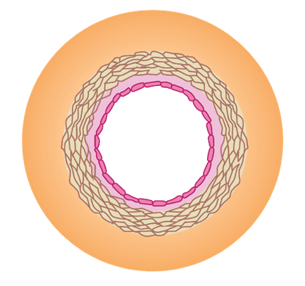
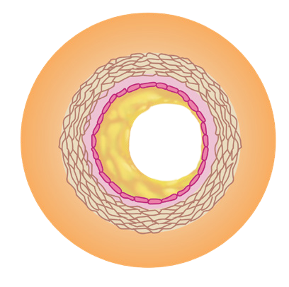

120
Student’s Book - Form Two
Biology for Secondary Schools
(a) Normal artery
Lumen

Lumen
(b) Artery with narrow lumen

Fat deposit
Figure 5.18: Effect of arteriosclerosis
As a result, the heart has to pump harder in order to supply the tissues with
enough blood. This may result to an
increased risk of heart diseases, stroke and high blood pressure (hypertension).
High blood pressure usually has no specific symptoms. However, it can
cause headache, dizziness, and ringing in the ears.
Causes of arteriosclerosis: Arteriosclerosis
is mainly caused by the following: excessive alcohol intake; smoking;
stress; too much fat in the diet; lack of physical exercise; and old age.
Effects of arteriosclerosis: Arteriosclerosis
causes swelling of part of a blood vessel
and rupturing of the artery walls. It also causes total blockage of an artery, thus depriving some tissues of oxygen. This
can cause severe damage or death of the
affected tissue.
Prevention of arteriosclerosis: People can reduce chances of developing arteriosclerosis by avoiding excessive alcohol intake and smoking, reducing stress, minimising intake of fatty foods, and engaging in regular physical exercise.
Sickle-cell anaemia
This is a genetic disorder resulting from the production of abnormal haemoglobin and malformed red blood cells. Its effect is the reduction of the
blood’s capacity to transport oxygen.
The disease gets its name from the
crescent or sickle shape of the red blood cells, as shown in Figure 5.19.
(a) Normal red blood cell
(b) Sickle-shaped red blood cell
Figure 5.19: Normal and sickle shaped red blood cells
08/04/2026 10:18:33